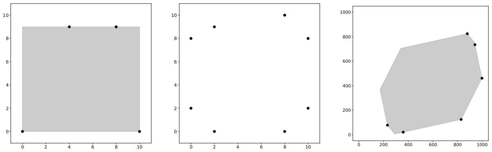

Symmetric Boundary
Symmetrical figures are beautiful—and they are the subject of this task. A region in a 2D plane is convex if, for every pair of points \(p\) and \(q\) in the region, the segment connecting \(p\) and \(q\) is entirely included in the region. Also, a region in a 2D plane is point-symmetric if, when you rotate the region by 180 degrees around a certain point, the rotated region exactly matches the original region.
You are given a convex polygon in a 2D plane with \(n\) vertices, numbered from \(1\) to \(n\) in counterclockwise order. Vertex \(i\) has coordinates \((x_i, y_i)\). No three vertices are collinear. Determine whether there exists a convex, point-symmetric region containing all of the \(n\) vertices on its boundary. If one or more such regions exist, compute the minimum area among all of them.
Input
The first line of input contains one integer \(n\) (\(3 \le n \le 30\)). Each of the next \(n\) lines contains two integers. The \(i\)-th line contains \(x_i\) and \(y_i\) (\(0 \le x_i, y_i \le 1000\)).
It is guaranteed that the given polygon is convex, its vertices are given in counterclockwise order, and no three of its vertices are collinear.
Output
If one or more such regions exist, output the minimum area among all of them. The relative error of the output must be within \(10^{-9}\).
If such a region does not exist, output -1 instead.
4 0 0 10 0 8 9 4 9
90.0
8 8 10 2 9 0 8 0 2 2 0 8 0 10 2 10 8
-1
6 231 77 359 20 829 124 998 461 941 735 879 825
486567.9669655848
Explanation for the sample input/output
Figure I.1 illustrates the vertices in the sample input as black dots. For sample inputs #1 and #3, the shaded regions represent the regions with the minimum possible area.
